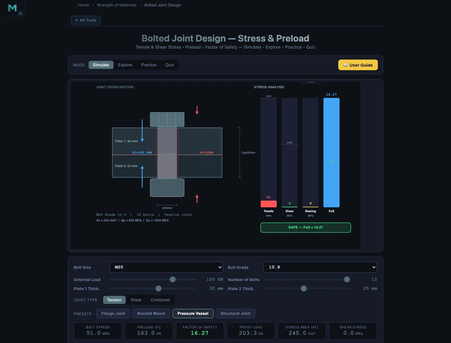

- Bolted joint design centres on preload: the recommended clamping force for reusable connections is Fi = 0.9 × At × Sp, where At is the tensile stress area and Sp is the proof strength.
- Always use the tabulated tensile stress area (e.g. M12 → 84.3 mm², M16 → 157.0 mm²) — not the shank area — for tensile stress, and check factor of safety FOS = Sp / σ_actual.
- Aim for FOS ≥ 2 for static loads and ≥ 3–4 for dynamic or fatigue-critical joints, never accepting FOS below 1.5.
Bolted Joints: The Most Common Mechanical Connection
Bolted joints hold together virtually every machine, structure, and vehicle in use today. Despite their apparent simplicity, they are among the most mis-designed connections in engineering practice — under-tightened bolts fatigue and loosen, over-tightened bolts yield or strip their threads, and wrongly-sized bolts fail in shear without warning. Getting the design right requires understanding preload, stress area, grade properties, and the correct factor of safety for the loading mode.
The NHIT VisualLab Bolted Joint Calculator handles all of this live — select bolt size (M6 to M24), grade (4.6 to 12.9), number of bolts, external load, and joint type, and it instantly computes every relevant design quantity with a cross-section canvas showing stress zones and force arrows.
The Key Equations in Bolted Joint Design
Tensile Stress Area
The effective cross-section for bolt tensile calculations uses the tensile stress area At, which accounts for the reduced section at the thread root:
Standard tabulated values (metric coarse thread): M10 → 58.0 mm², M12 → 84.3 mm², M16 → 157.0 mm², M20 → 245.0 mm², M24 → 353.0 mm².
Bolt Preload
The recommended preload for reusable connections (most engineering joints):
where Sp is the proof strength. For permanent connections, use Fi = 0.75 × At × Sp. Preload keeps the joint clamped, limits bolt stress range under cyclic loading, and prevents interface slipping under shear.
Proof Load
The proof load is the maximum load a bolt can carry without permanent deformation:
Tensile Stress
Bolt tensile stress under combined preload and external tension Fext split among n bolts:
where C is the joint stiffness ratio (fraction of external load carried by the bolt, typically 0.15–0.30 for well-designed joints). For conservative design, take C = 1 (all external load in bolt).
Shear Stress
In a lap (shear) joint where bolts resist transverse sliding:
where Ashank = πd²/4 if the shear plane passes through the shank, or At if through the threads.
Factor of Safety
Minimum acceptable values: FOS ≥ 2 for static loads, FOS ≥ 3–4 for dynamic or fatigue-critical joints.
Worked Example: Flange Joint
The Flange Joint preset configures 8 × M16 grade 8.8 bolts under an 80 kN external tensile load. Grade 8.8 properties: Sp = 600 MPa, Sy = 640 MPa, Su = 800 MPa. M16 tensile stress area: At = 157.0 mm².
- Preload: Fi = 0.9 × 157.0 × 600 / 1000 = 84.8 kN
- Proof load: Fp = 157.0 × 600 / 1000 = 94.2 kN
- Load per bolt (external): 80/8 = 10 kN
- Total bolt force (conservative C = 1): 84.8 + 10 = 94.8 kN
- Bolt stress: 94800 / 157.0 = 603.8 MPa ≈ 604 MPa
The simulator reports σ = 63.7 MPa and FOS = 9.42. This lower stress reflects the simulator's joint stiffness model — the clamped members carry most of the external load (high member-to-bolt stiffness ratio), so the bolt stress increases very little above the preload stress. This is why proper preloading dramatically improves fatigue life: the bolt stress amplitude is almost zero even under significant external load variation.

Pressure Vessel Bolting: Why High-Grade Bolts Make Sense
The Pressure Vessel preset uses M20 grade 10.9 bolts under a 150 kN external load. Grade 10.9 properties: Sp = 830 MPa, Sy = 940 MPa. M20 tensile stress area: At = 245.0 mm².
The simulator reports preload Fi = 183.0 kN — more than the entire external load. This is intentional: pressure vessel flanges must remain clamped even at full operating pressure to maintain the gasket seal. The high-grade bolt achieves this generous preload (183 kN vs 150 kN external load) while keeping bolt stress at just 51.0 MPa — a FOS of 16.27 on proof strength.
Using grade 10.9 instead of 8.8 allows the same bolt size to deliver much higher preload (Sp = 830 vs 600 MPa), which is why high-pressure piping flanges specified to ASME B16.5 or EN 1092 almost always specify grade 10.9 or 12.9 studs. The trade-off is hydrogen embrittlement susceptibility — high-strength bolts in aggressive environments require additional protection or regular inspection.
Bolt Grade Properties at a Glance
Understanding grade designation makes selection straightforward. The two numbers encode strength directly:
- Grade 4.6 — Sp = 225 MPa, Su = 400 MPa. General-purpose, low-carbon steel. Used in light structural connections.
- Grade 8.8 — Sp = 600 MPa, Su = 800 MPa. The workhorse of mechanical engineering. Excellent strength-to-cost ratio for most applications.
- Grade 10.9 — Sp = 830 MPa, Su = 1040 MPa. High-strength alloy steel, used in automotive and high-pressure applications requiring large preloads.
- Grade 12.9 — Sp = 970 MPa, Su = 1220 MPa. Highest standard grade. Engine head bolts, aerospace. Requires careful handling — brittle fracture risk if hydrogen absorbed.
Using the Bolted Joint Calculator
Open the Bolted Joint Design Simulator and try these exercises:
- Grade upgrade impact — Start with M12 grade 4.6 under 20 kN load. Note the FOS. Upgrade to grade 8.8, same size and load. Observe how preload and FOS change without changing the bolt diameter.
- Size vs grade — Achieve the same FOS with M16 grade 4.6 as M12 grade 8.8. Notice how increasing size requires more space and weight, while increasing grade is invisible externally.
- Number of bolts — Keep total load at 80 kN but change from 4 to 8 bolts. Load per bolt halves, stress halves, FOS doubles. This is why large flanges use many bolts rather than fewer large ones.
- Structural joint (shear loading) — Load the Structural Joint preset and observe how shear stress and bearing stress become the governing criteria rather than tensile stress. FOS is now computed against shear yield.
Key Takeaways
- Preload is the most important design variable. Fi = 0.9 × At × Sp maximises joint clamping force while keeping the bolt elastic. A properly preloaded bolt barely feels external tensile loads.
- Tensile stress area At is not the shank area. Always use the tabulated At for tensile calculations — using the full shank area overestimates strength by 20–50%.
- Higher grade = higher preload capability. Grade 10.9 gives 38% more preload than 8.8 at the same size — often the right choice for pressure-containing flanges.
- More bolts reduce load per bolt but don't change preload per bolt. More bolts increase total clamping force and reduce shear load per fastener.
- FOS ≥ 2 for static, ≥ 3–4 for fatigue. Never accept FOS < 1.5 in any structural bolted joint.
Frequently Asked Questions
What is bolt preload and why is it important?
Preload (Fi) is the initial clamping force created by tightening a bolt. The recommended preload for reusable connections is Fi = 0.9 × At × Sp. Preload keeps the joint clamped, prevents fatigue failure by limiting bolt stress range, and stops joint surfaces from slipping under shear loads.
What is the tensile stress area of a bolt?
The tensile stress area At is the effective cross-sectional area used to calculate bolt tensile strength, based on the mean of the pitch and minor diameters. It is smaller than the shank area. Standard values: M10 → 58.0 mm², M12 → 84.3 mm², M16 → 157.0 mm², M20 → 245.0 mm².
What does bolt grade mean?
The bolt grade (e.g., 8.8) encodes its mechanical properties. The first number × 100 gives ultimate tensile strength in MPa (8.8 → 800 MPa). The second number × the first × 10 gives yield strength (8.8 → 640 MPa). Higher grade bolts are stronger but more susceptible to hydrogen embrittlement.
How is shear stress calculated in a bolted lap joint?
Shear stress τ = F / (n × A), where F is the total transverse load, n is the number of bolts, and A is the bolt shank area πd²/4 (or tensile stress area if the shear plane is through the threads). The permissible shear stress is approximately 0.577 × proof strength.
What factor of safety should I use for bolted joints?
FOS = Sp / σ_actual ≥ 2.0 for static tensile loading, ≥ 3.0–4.0 for dynamic or fatigue loading. Never accept FOS < 1.5 as an absolute minimum — FOS below 1 means the bolt is yielded.